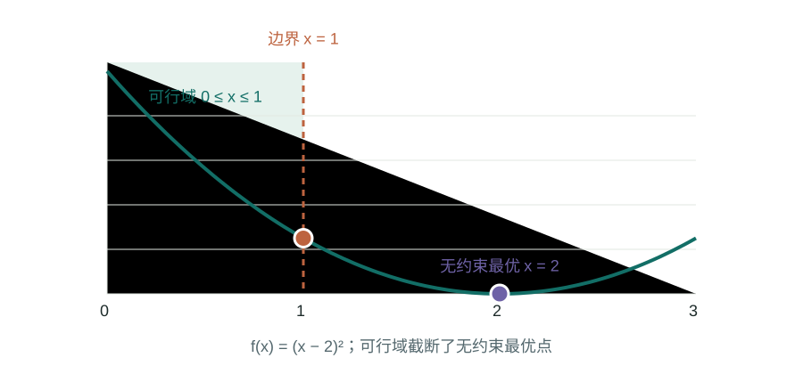

CHAPTER 01 · 1.4 / Constrained and Unconstrained Optimization
有约束优化与无约束优化
约束会改变可选方案，也会改变最优点的几何位置。最优解可能落在边界上，因此“梯度等于零”不是所有约束问题的必要条件。
约束改变了什么？
无约束优化允许变量在指定定义域内自由变化，典型形式是 。有约束优化则要求决策满足额外条件，例如容量上限、预算、守恒关系、变量非负或几何边界。
从几何上看，无约束问题在整个定义域里寻找目标函数最低点；有约束问题只能在可行域中寻找最低点。可行域可能是整个空间的一部分、一个曲面、边界，甚至只有少数离散点。
一个边界最优点
考虑目标函数 。无约束时，最优点是 x=2，目标值为 0。现在加入约束 0≤x≤1：

由于可行域只包含 [0,1]，最优点变成 x=1，目标值为 1。注意此处导数为 ，并不等于零。它仍然是约束问题的最优点，因为沿着允许的方向移动，目标值不会继续下降。
从边界条件看 KKT
将上面的上界写成 。对最小化问题，拉格朗日函数为：
在 x=1 处，取 λ=2，可以同时满足一阶驻点条件、乘子非负和互补条件：
这里 λ=2 表示上界约束对最优性条件产生了非零作用。KKT 条件是约束优化的一阶分析框架；在一般非凸问题中，它通常需要适当的约束资格条件才能作为必要条件，在凸问题中还可配合凸性条件得到更强的充分性结论。
常见处理思路
- 变量消元：若等式约束能显式解出部分变量，可以减少维度；但表达式可能变复杂。
- 投影方法：每次更新后把点投影回可行集合；投影本身可能很难计算。
- 拉格朗日乘子与 KKT：把约束对最优性的影响写进驻点条件，适合理论分析和许多数值方法。
- 罚函数与增广拉格朗日：把约束违反程度加入目标或构造更好的子问题；罚参数过大可能导致数值病态。
- 障碍函数：通过在边界附近增大的代价保持迭代点位于内部；要求初始点和可行域结构满足方法需要。
检查候选点是否可行
目标函数为 (x−2)²，约束为 0≤x≤1。拖动候选点，观察它是否可行，以及它与约束最优点 x=1 的区别。
一维约束检查器
Python：比较两个问题
"""Show why a constrained optimum can lie on a boundary."""
def objective(x: float) -> float:
return (x - 2.0) ** 2
def feasible(x: float) -> bool:
return 0.0 <= x <= 1.0
if __name__ == "__main__":
unconstrained_x = 2.0
constrained_x = 1.0
multiplier = 2.0
gradient_at_boundary = 2.0 * (constrained_x - 2.0)
print("unconstrained:", unconstrained_x, objective(unconstrained_x))
print("constrained: ", constrained_x, objective(constrained_x))
print("boundary gradient:", gradient_at_boundary)
print("KKT multiplier:", multiplier)
assert not feasible(unconstrained_x)
assert feasible(constrained_x)
assert objective(constrained_x) == 1.0
assert gradient_at_boundary + multiplier == 0.0
assert multiplier >= 0.0
方法选择与常见误区
- 不能把无约束最优点直接当作约束问题的答案；先检查可行性。
- 约束最优点可能位于边界，梯度不必为零。
- 罚函数不是“免费消除约束”；参数选择会影响精度与条件数。
- 约束方向和乘子符号必须使用同一套约定。若把 g(x)≤0 改成 g(x)≥0，拉格朗日函数的符号也要同步调整。
练习与参考
练习：将目标改为 (x−0.4)²，约束仍为 0≤x≤1。此时约束是否改变最优解？再把目标改为 (x−1.6)²，重新求解。
自检：第一个目标的无约束最优点 0.4 可行，因此约束不改变解；第二个目标的无约束最优点 1.6 不可行，约束最优点变为边界 1。
参考资料
- Jorge Nocedal, Stephen J. Wright, Numerical Optimization, 2nd ed., Springer, 2006，Chapter 1 “Constrained and Unconstrained Optimization”；Chapter 12 “Theory of Constrained Optimization”。出版社书目。